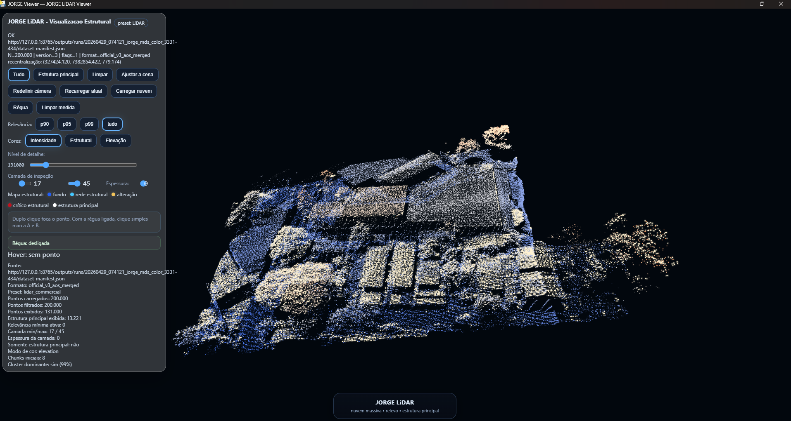
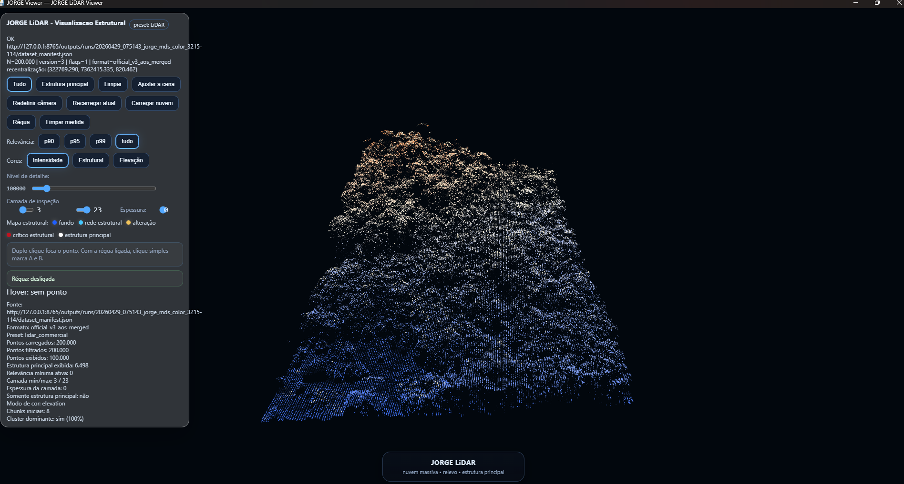

O JORGE LiDAR transforma nuvens de pontos densas em leitura estrutural navegável para engenharia, topografia, cidades e infraestrutura.
Processamento local, visualização interativa, relevância espacial e performance em datasets que desafiam viewers convencionais.
Empresas e equipes técnicas já possuem drones, sensores e scanners. O gargalo frequentemente está em transformar milhões de pontos em leitura útil.
Grandes nuvens podem virar massa visual sem hierarquia clara.
Horas navegando arquivos para encontrar o que importa.
Datasets densos podem travar fluxos comuns de trabalho.
Sem leitura clara, reuniões e operações perdem velocidade.
O JORGE LiDAR foi construído para lidar com volume real, não apenas demos pequenas.
Isso significa sair do discurso e entrar em capacidade operacional concreta.
Projetado para datasets extensos e densos.
Destaca regiões relevantes e organização espacial.
Sem depender de upload para nuvem pública.
Arquivos LAZ reais processados localmente no JORGE Engine, demonstrando leitura estrutural em ambiente urbano, relevo, vegetação e massa construída.

Edificações, vegetação e organização espacial em nuvem de pontos real.

Terreno complexo para aplicações em geologia, drenagem e infraestrutura.
Primeiras aplicações comerciais e técnicas para a vertical LiDAR.
Terreno, curvas, relevo e leitura espacial ampla.
Infraestrutura urbana, volumes e organização territorial.
Camadas, densidade e estrutura ambiental.
Ambientes técnicos, obras e comparação visual.
Traga um arquivo real e valide se o JORGE gera valor no seu fluxo.
Vamos testar com dado real e ver se o JORGE reduz atrito operacional.